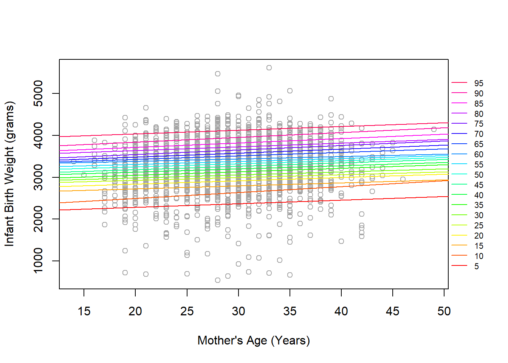
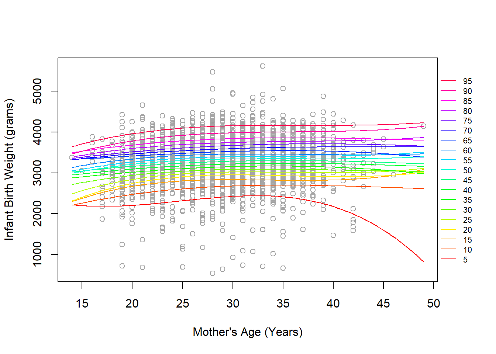
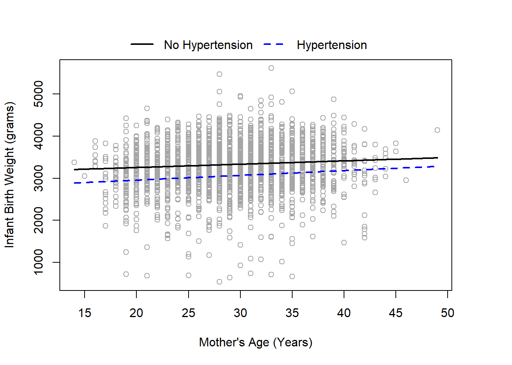
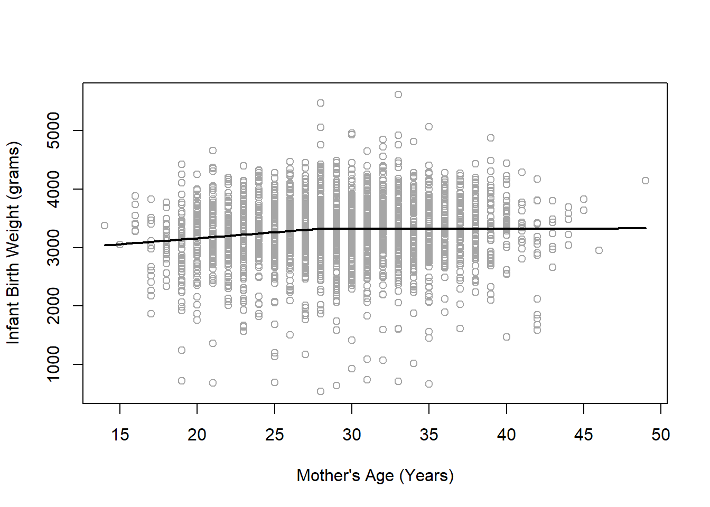

Code
dat <- read.csv('../../.data/natl2018us_random2500.csv')Alex Kaizer
University of Colorado-Anschutz Medical Campus
This page includes the solutions to the optional practice problems for the given week. If you want to see a version without solutions please click here. Data sets, if needed, are provided on the BIOS 6618 Canvas page for students registered for the course.
This week’s extra practice exercises are focusing on some of our “advanced” topics including segmented (piecewise) regression, quantile regression, and splines to model nonlinear trends.
The following code can load the natl2018us_random2500.csv file into R:
The dataset represents a random sample of 2500 births in the US during 2018 collected by the CDC. For our exercises below we will focus on the following variables:
dbwt: infant birth weight in gramsmager: mother’s age in yearsrf_cesar: binary variable indicating if mother previously had a Cesarean delivery (‘Y’=yes, ‘N’=no)rf_ghype: binary variable indicating if mother had gestational hypertension (‘Y’=yes, ‘N’=no)dob_mm: month of birth (1=January, …, 12=December)This problem will focus on exploring quantile regression modeling. The first problems explore comparing linear regression with quantile regression of the median, then special topics are explored including adjusting for other covariates, including interactions, and modeling potentially nonlinear trends with splines.
Fit and compare the simple linear regression model and quantile regression model for the outcome of infant birth weight in grams (i.e., dependent variable) and independent variable for mother’s age in years. State the interpretations of both models for the intercept and mother’s age, then compare the estimated coefficients and statistical significance for the two approaches.
Solution:
The simple linear regression model is
Call:
glm(formula = dbwt ~ mager, data = dat)
Coefficients:
Estimate Std. Error t value Pr(>|t|)
(Intercept) 3037.136 57.841 52.508 < 2e-16 ***
mager 8.641 1.955 4.421 1.03e-05 ***
---
Signif. codes: 0 '***' 0.001 '**' 0.01 '*' 0.05 '.' 0.1 ' ' 1
(Dispersion parameter for gaussian family taken to be 311196.5)
Null deviance: 783450552 on 2499 degrees of freedom
Residual deviance: 777368935 on 2498 degrees of freedom
AIC: 38719
Number of Fisher Scoring iterations: 2The simple quantile regression of the median model is
Call: rq(formula = dbwt ~ mager, tau = c(0.5), data = dat)
tau: [1] 0.5
Coefficients:
Value Std. Error t value Pr(>|t|)
(Intercept) 3097.50000 59.10962 52.40264 0.00000
mager 7.50000 1.99064 3.76762 0.00017Our intercept interpretations are:
Our slope interpretations for mother’s age are:
For the most part, these coefficients are not drastically different and they are both statistically significant (p<0.001 for both). This may suggest that the mean and median have similar trajectories across mother’s age when assuming a linear trend.
Now add the predictors for prior cesarean delivery, gestational hypertension, and month of birth (as a categorical variable) to the models from 1a. Provide an interpretation of the beta coefficients for mother’s age from both models, then briefly compare the beta coefficients between the linear and quantile regression models.
Solution:
Call:
glm(formula = dbwt ~ mager + rf_cesar + rf_ghype + as.factor(dob_mm),
data = dat)
Coefficients:
Estimate Std. Error t value Pr(>|t|)
(Intercept) 3000.826 72.167 41.582 < 2e-16 ***
mager 8.545 1.966 4.345 1.45e-05 ***
rf_cesarY 26.123 30.229 0.864 0.3876
rf_ghypeY -259.607 45.675 -5.684 1.47e-08 ***
as.factor(dob_mm)2 -7.222 59.951 -0.120 0.9041
as.factor(dob_mm)3 70.440 56.992 1.236 0.2166
as.factor(dob_mm)4 68.558 58.141 1.179 0.2384
as.factor(dob_mm)5 72.556 56.815 1.277 0.2017
as.factor(dob_mm)6 65.468 56.648 1.156 0.2479
as.factor(dob_mm)7 95.284 57.351 1.661 0.0968 .
as.factor(dob_mm)8 34.017 56.953 0.597 0.5504
as.factor(dob_mm)9 5.302 56.840 0.093 0.9257
as.factor(dob_mm)10 108.976 60.754 1.794 0.0730 .
as.factor(dob_mm)11 17.148 57.610 0.298 0.7660
as.factor(dob_mm)12 73.305 56.602 1.295 0.1954
---
Signif. codes: 0 '***' 0.001 '**' 0.01 '*' 0.05 '.' 0.1 ' ' 1
(Dispersion parameter for gaussian family taken to be 307537.2)
Null deviance: 783450552 on 2499 degrees of freedom
Residual deviance: 764229872 on 2485 degrees of freedom
AIC: 38703
Number of Fisher Scoring iterations: 2Warning in rq.fit.br(x, y, tau = tau, ...): Solution may be nonunique
Call: rq(formula = dbwt ~ mager + rf_cesar + rf_ghype + as.factor(dob_mm),
tau = c(0.5), data = dat)
tau: [1] 0.5
Coefficients:
Value Std. Error t value Pr(>|t|)
(Intercept) 3124.16667 91.35139 34.19944 0.00000
mager 7.83333 1.99683 3.92289 0.00009
rf_cesarY 7.16667 30.22528 0.23711 0.81259
rf_ghypeY -266.16667 53.07499 -5.01492 0.00000
as.factor(dob_mm)2 -91.33333 86.48415 -1.05607 0.29104
as.factor(dob_mm)3 -27.33333 75.57091 -0.36169 0.71761
as.factor(dob_mm)4 -45.16667 78.09007 -0.57839 0.56305
as.factor(dob_mm)5 -35.66667 79.23438 -0.45014 0.65265
as.factor(dob_mm)6 -17.50000 77.58002 -0.22557 0.82155
as.factor(dob_mm)7 -42.16667 84.30264 -0.50018 0.61699
as.factor(dob_mm)8 -33.66667 76.57305 -0.43967 0.66022
as.factor(dob_mm)9 -58.50000 75.42326 -0.77562 0.43805
as.factor(dob_mm)10 43.00000 89.69914 0.47938 0.63171
as.factor(dob_mm)11 -35.16667 77.67001 -0.45277 0.65075
as.factor(dob_mm)12 58.50000 78.68332 0.74349 0.45726Note, you may receive a message “Warning: Solution may be nonunique”. You can learn more through the FAQ() of the quantreg package, but it is likely not too concerning in our case.
With regards to our interpretation, our slope parameters for mother’s age are:
With regards to our other coefficients, we see some more substantial differences between the estimated effect of a coefficient on the mean of the outcome versus the median of the outcome. For example, a previous cesarean resulted in an average increase of 26 grams, after adjusting for all other terms. The increase in the median is lower at only 7 grams after adjusting for all other terms. This may indicate that we could have outliers affecting our mean estimate within certain categories or potentially that the mean and median have greater differences. When considering month-specific effects, we see the quantile regression has many negative coefficients with respect to the reference month of January, whereas the linear regression generally has higher mean birth weights relative to January.
For the simple quantile regression in 1a, expand to include estimates for the 5th to the 95th quantile in increments of 5 and then create a scatterplot to demonstrate the model fits for each quantile. Briefly describe the figure.
Solution:
# Fit quantile regression over all requested quantiles
qr3 <- rq(dbwt ~ mager, data=dat, tau=seq(0.05,0.95,by=0.05))
# Create plot
par( mar=c(5.1,4.1,4.1,4.1))
plot(x=dat$mager, y=dat$dbwt, xlab="Mother's Age (Years)", ylab='Infant Birth Weight (grams)', col='gray65')
quant_col <- rainbow(19) # create grid of 19 colors to plot lines for
for( i in 1:19 ){ abline(a=coef(qr3)[1,i], b=coef(qr3)[2,i], col=quant_col[i]) }
legend('right', xpd=T, inset=-0.1, col=rev(quant_col), legend=seq(95,5,-5), cex=0.7, bty='n', lty=rep(1,19))
We see that all modeled quantiles show increasing birth weights across the span of mother’s age at birth, but the slopes are not consistent. For example, the 10th percentile nearly combines with the 15th percentile at older ages. Likewise, some younger ages seem to converge before getting older and spreading out somewhat. It is also worth noting that with 2500 points, it is challenging to get a good sense of the density at a given age/weight combination since the points are mostly overlapping.
Take your approach in 1c and now add some form of flexible spline to measure if there are any nonlinear effects. Create a new scatterplot with this information and provide a brief discussion if it seems like the splines may be a meaningful addition or if a simpler model for any/all quantiles may be recommended.
Solution:
Here we’ll use a B-spline for mother’s age. We’ll then predict the outcomes over a grid of ages to create nonlinear lines to plot:
library(splines)
# Fit quantile regression over all requested quantiles
qr4 <- rq(dbwt ~ bs(mager), data=dat, tau=seq(0.05,0.95,by=0.05))
# Create predictions
newage <- data.frame('mager' = seq(14,49,length.out=100))
pred_y <- predict(qr4, newdata=newage)
# Create plot
par( mar=c(5.1,4.1,4.1,4.1))
plot(x=dat$mager, y=dat$dbwt, xlab="Mother's Age (Years)", ylab='Infant Birth Weight (grams)', col='gray65')
quant_col <- rainbow(19) # create grid of 19 colors to plot lines for
for( i in 1:19 ){ lines(x=newage$mager, y=pred_y[,i], col=quant_col[i]) }
legend('right', xpd=T, inset=-0.1, col=rev(quant_col), legend=seq(95,5,-5), cex=0.7, bty='n', lty=rep(1,19))
There appears to be some potentially concerning bheavior near the tails of the distribution for mother’s age where different quantiles are overlapping (sometimes by multiple magnitudes of 5% increments). The general trend for many of the quantiles, especially between about 20-40 years of age where most of the data is, is largely linear. This suggests we may be fine with our more parsimonious quantile regression that only included a single predictor for mother’s age. It is possible that some of the more extreme quantiles and/or more extreme ages may benefit from a non-linear trend provided by the B-spline, but this may also be artificially present given the sparsity of the data at this points (e.g., the 5th percentile slopes strongly downward due to some lower birth weight’s at around 42 years of age and none later).
From the results in 1b, we noticed what may be an interesting association between infant birth weight and presence of gestational hypertension. For the quantile regression of the median, fit a model that includes mother’s age, gestational hypertension, and the interaction of the two. Create a scatterplot with the predicted birth weight’s by mother’s age and gestational hypertension status. From your figure, does there appear to be a significant difference? From the results of the regression model, does there appear to be a statistically significant difference?
Solution:
Call: rq(formula = dbwt ~ mager * rf_ghype, tau = c(0.5), data = dat)
tau: [1] 0.5
Coefficients:
Value Std. Error t value Pr(>|t|)
(Intercept) 3097.22222 60.09310 51.54040 0.00000
mager 7.88889 1.98361 3.97705 0.00007
rf_ghypeY -367.05556 197.70765 -1.85656 0.06349
mager:rf_ghypeY 3.40278 5.30995 0.64083 0.52169# Create predictions
newage <- data.frame('mager' = c(seq(14,49,length.out=100),seq(14,49,length.out=100)),
'rf_ghype' = c(rep('N',100), rep('Y',100)) ) # data frame needs variables for both age and hypertension
pred_y <- predict(qr5, newdata=newage)
# Create plot
par( mar=c(5.1,4.1,4.1,4.1))
plot(x=dat$mager, y=dat$dbwt, xlab="Mother's Age (Years)", ylab='Infant Birth Weight (grams)', col='gray65')
legend('top', xpd=T, inset=-0.13, lty=c(1,2), lwd=c(2,2), col=c('black','blue'), legend=c('No Hypertension','Hypertension'), bty='n', horiz=T)
lines(x=newage$mager[1:100], y=pred_y[1:100], col='black', lwd=2)
lines(x=newage$mager[101:200], y=pred_y[101:200], col='blue', lwd=2, lty=2)
From our figure, it appears that the trend of the median birth weight is very similar between mothers with and without gestational hypertension, with a slightly narrowing difference towards higher ages. However, \(p=0.522\) from our quantile regression, indicating we fail to reject the null hypothesis and there is not sufficient evidence to reject that there isn’t an interaction (i.e., that the beta coefficient could truly be 0). We could likely use a more parsimonious model without the interaction and it suggests that hypertension may have a largely similar effect across the age span.
This problem uses the same dataset to explore if a breakpoint may be beneficial to model the association between mother’s age and infant birth weight.
Fit a segmented regression with 1 breakpoint and plot the fitted segmented regression line on a scatterplot of the observed data. What is the estimated breakpoint? Does it visually seem like there may be a meaningful change in slope where the breakpoint is plotted?
Solution:
We will use the segmented package:
***Regression Model with Segmented Relationship(s)***
Call:
segmented.glm(obj = mod2)
Estimated Break-Point(s):
Est. St.Err
psi1.mager 28 2.056
Coefficients of the linear terms:
Estimate Std. Error t value Pr(>|t|)
(Intercept) 2752.416 149.261 18.440 < 2e-16 ***
mager 20.473 6.362 3.218 0.00131 **
U1.mager -20.397 7.460 -2.734 NA
---
Signif. codes: 0 '***' 0.001 '**' 0.01 '*' 0.05 '.' 0.1 ' ' 1
(Dispersion parameter for gaussian family taken to be 310361)
Null deviance: 783450552 on 2499 degrees of freedom
Residual deviance: 774660965 on 2496 degrees of freedom
AIC: 38714
Boot restarting based on 10 samples. Last fit:
Convergence attained in 0 iterations (rel. change 4.9469e-07)
From our summary(seg2) output, the estimated breakpoint is at 28 years of age. Based on our scatterplot, it does appear that the slope seems to incresae slightly up until age 28, then it seems to stabilize as a fairly flat line (i.e., slope near 0).
Using Davies’ test, determine if there is a significant change in slope. State your null and alternative hypothesis.
Solution:
Our null hypothesis is that the difference-in-slopes is equal to 0 (i.e., \(H_0: \beta = 0\) if \(\beta\) is our difference-in-slopes). The alternative hypothesis is that the difference-in-slopes is not equal to 0. The null hypothesis corresponds to no breakpoint in our data.
We can use the davies.test() function in the segmented package to test this hypothesis:
Davies' test for a change in the slope
data: formula = dbwt ~ mager , method = glm
model = gaussian , link = identity , statist = lrt
segmented variable = mager
'best' at = 32.222, n.points = 10, p-value = 0.04485
alternative hypothesis: two.sidedFrom this output, we see that \(p=0.045 < 0.05\). Therefore, we will reject the null hypothesis and conclude that there is a change in slopes around a single breakpoint.
If we are concerned that the “best” breakpoint of 32.222 doesn’t match our estimate of 28, we can also specify the \(k\) parameter and make it larger (although the p-value, since it is near 0.05, may cross over to being greater than 0.05):
Davies' test for a change in the slope
data: formula = dbwt ~ mager , method = glm
model = gaussian , link = identity , statist = lrt
segmented variable = mager
'best' at = 28.053, n.points = 20, p-value = 0.04883
alternative hypothesis: two.sided
Davies' test for a change in the slope
data: formula = dbwt ~ mager , method = glm
model = gaussian , link = identity , statist = lrt
segmented variable = mager
'best' at = 27.838, n.points = 100, p-value = 0.05245
alternative hypothesis: two.sidedAre the slopes both significantly different from 0 before and after the breakpoint?
Solution:
From 2b and Davies’ test we know that the breakpoint is significant and the slopes change significantly before and after the breakpoint. However, we did not test if either (or both) slopes are significantly different from 0. We can evaluate this question using the slope() function:
$mager
Est. St.Err. t value CI(95%).l CI(95%).u
slope1 20.473000 6.362 3.218000 8.0035 32.9420
slope2 0.075971 3.895 0.019505 -7.5581 7.7101From the output, we see that it automatically calculates the slope after the breakpoint while also presenting the slope1 parameter that matches the mager summary from summary(seg2). While we could manually calculate a p-value based on the provided \(t\)-value, we can also use the 95% CI to evaluate significance. In this case, only the slope1 confidence interval doesn’t contain 0, suggesting that the slope after the breakpoint is not significantly different from 0 (i.e., it matches our visual interpretation).
While not asked for in this question, we could note that for every 1 year increase in age, the average infant birth weight increases by 20.5 grams (95% CI 8.0, 32.9 grams) before 28 years of maternal age and increases by 0.1 grams (95% CI: -7.6, 7.7 grams) above 28 years of maternal age.
---
title: "Week 13 Practice Problems: Solutions"
author:
name: Alex Kaizer
roles: "Instructor"
affiliation: University of Colorado-Anschutz Medical Campus
toc: true
toc_float: true
toc-location: left
format:
html:
code-fold: show
code-overflow: wrap
code-tools: true
---
```{r, echo=F, message=F, warning=F}
library(kableExtra)
library(dplyr)
```
This page includes the solutions to the optional practice problems for the given week. If you want to see a version [without solutions please click here](/labs/prac13/index.qmd). Data sets, if needed, are provided on the BIOS 6618 Canvas page for students registered for the course.
This week's extra practice exercises are focusing on some of our "advanced" topics including segmented (piecewise) regression, quantile regression, and splines to model nonlinear trends.
# Dataset Background
The following code can load the `natl2018us_random2500.csv` file into R:
```{r, eval=T}
dat <- read.csv('../../.data/natl2018us_random2500.csv')
```
The dataset represents a random sample of 2500 births in the US during 2018 collected by the CDC. For our exercises below we will focus on the following variables:
* `dbwt`: infant birth weight in grams
* `mager`: mother's age in years
* `rf_cesar`: binary variable indicating if mother previously had a Cesarean delivery ('Y'=yes, 'N'=no)
* `rf_ghype`: binary variable indicating if mother had gestational hypertension ('Y'=yes, 'N'=no)
* `dob_mm`: month of birth (1=January, ..., 12=December)
# Exercise 1: Quantile Regression Example (with Multiple QR, Interactions, and Splines)
This problem will focus on exploring quantile regression modeling. The first problems explore comparing linear regression with quantile regression of the median, then special topics are explored including adjusting for other covariates, including interactions, and modeling potentially nonlinear trends with splines.
## 1a: Comparing Simple Linear Regression and Quantile Regression
Fit and compare the simple linear regression model and quantile regression model for the outcome of infant birth weight in grams (i.e., dependent variable) and independent variable for mother's age in years. State the interpretations of both models for the intercept and mother's age, then compare the estimated coefficients and statistical significance for the two approaches.
**Solution:**
The simple linear regression model is
```{r}
# Fit with glm function
glm1 <- glm(dbwt ~ mager, data=dat)
summary(glm1)
```
The simple quantile regression of the median model is
```{r, message=F}
# Fit with rq from the quantreg package
library(quantreg)
qr1 <- rq(dbwt ~ mager, data=dat, tau=c(0.5)) # note, default is to model the 50th percentile (i.e., median) but we include tau parameter for completeness
summary(qr1)
```
Our intercept interpretations are:
* For linear regression, the average birth weight in grams is 3037.136 for a mother who is 0 years old.
* For quantile regression, the median birth weight in grams is 3097.5 for a mother who is 0 years old.
* Note, the intercept doesn't have a meaningful interpretation because it doesn't make scientific sense for a mother to be 0 years old themselves and, even if it did, it would represent extrapolation from our data.
Our slope interpretations for mother's age are:
* For linear regression, a one year increase in mother's age leads to an average increase of 8.6 grams in the baby's birth weight.
* For quantile regression, a one year increase in mother's age leads to an increase of 7.5 grams for the 50th percentile (i.e., median) birth weight.
For the most part, these coefficients are not drastically different and they are both statistically significant (p<0.001 for both). This may suggest that the mean and median have similar trajectories across mother's age when assuming a linear trend.
## 1b: Comparing Multiple Linear Regression and Quantile Regression
Now add the predictors for prior cesarean delivery, gestational hypertension, and month of birth (as a categorical variable) to the models from **1a**. Provide an interpretation of the beta coefficients for mother's age from both models, then briefly compare the beta coefficients between the linear and quantile regression models.
**Solution:**
```{r}
# Multiple linear regression
glm2 <- glm(dbwt ~ mager + rf_cesar + rf_ghype + as.factor(dob_mm), data=dat)
summary(glm2)
# Multiple quantile regression
qr2 <- rq(dbwt ~ mager + rf_cesar + rf_ghype + as.factor(dob_mm), data=dat, tau=c(0.5)) # note, default is to model the 50th percentile (i.e., median) but we include tau parameter for completeness
summary(qr2)
```
Note, you may receive a message "Warning: Solution may be nonunique". You can learn more through the `FAQ()` of the quantreg package, but it is likely not too concerning in our case.
With regards to our interpretation, our slope parameters for mother's age are:
* For linear regression, a one year increase in mother's age leads to an average increase of 8.5 grams in the baby's birth weight after adjusting for previous cesarean, gestational hypertension, and month of the birth.
* For quantile regression, a one year increase in mother's age leads to an increase of 7.8 grams for the 50th percentile (i.e., median) birth weight after adjusting for previous cesarean, gestational hypertension, and month of the birth.
With regards to our other coefficients, we see some more substantial differences between the estimated effect of a coefficient on the *mean* of the outcome versus the *median* of the outcome. For example, a previous cesarean resulted in an average increase of 26 grams, after adjusting for all other terms. The increase in the median is lower at only 7 grams after adjusting for all other terms. This may indicate that we could have outliers affecting our mean estimate within certain categories or potentially that the mean and median have greater differences. When considering month-specific effects, we see the quantile regression has many negative coefficients with respect to the reference month of January, whereas the linear regression generally has *higher* mean birth weights relative to January.
## 1c: Quantile Regression for Other Quantiles
For the simple quantile regression in **1a**, expand to include estimates for the 5th to the 95th quantile in increments of 5 and then create a scatterplot to demonstrate the model fits for each quantile. Briefly describe the figure.
**Solution:**
```{r}
# Fit quantile regression over all requested quantiles
qr3 <- rq(dbwt ~ mager, data=dat, tau=seq(0.05,0.95,by=0.05))
# Create plot
par( mar=c(5.1,4.1,4.1,4.1))
plot(x=dat$mager, y=dat$dbwt, xlab="Mother's Age (Years)", ylab='Infant Birth Weight (grams)', col='gray65')
quant_col <- rainbow(19) # create grid of 19 colors to plot lines for
for( i in 1:19 ){ abline(a=coef(qr3)[1,i], b=coef(qr3)[2,i], col=quant_col[i]) }
legend('right', xpd=T, inset=-0.1, col=rev(quant_col), legend=seq(95,5,-5), cex=0.7, bty='n', lty=rep(1,19))
```
We see that all modeled quantiles show increasing birth weights across the span of mother's age at birth, but the slopes are not consistent. For example, the 10th percentile nearly combines with the 15th percentile at older ages. Likewise, some younger ages seem to converge before getting older and spreading out somewhat. It is also worth noting that with 2500 points, it is challenging to get a good sense of the density at a given age/weight combination since the points are mostly overlapping.
## 1d: Quantile Regression for Other Quantiles with Splines
Take your approach in **1c** and now add some form of flexible spline to measure if there are any nonlinear effects. Create a new scatterplot with this information and provide a brief discussion if it seems like the splines may be a meaningful addition or if a simpler model for any/all quantiles may be recommended.
**Solution:**
Here we'll use a B-spline for mother's age. We'll then predict the outcomes over a grid of ages to create nonlinear lines to plot:
```{r}
library(splines)
# Fit quantile regression over all requested quantiles
qr4 <- rq(dbwt ~ bs(mager), data=dat, tau=seq(0.05,0.95,by=0.05))
# Create predictions
newage <- data.frame('mager' = seq(14,49,length.out=100))
pred_y <- predict(qr4, newdata=newage)
# Create plot
par( mar=c(5.1,4.1,4.1,4.1))
plot(x=dat$mager, y=dat$dbwt, xlab="Mother's Age (Years)", ylab='Infant Birth Weight (grams)', col='gray65')
quant_col <- rainbow(19) # create grid of 19 colors to plot lines for
for( i in 1:19 ){ lines(x=newage$mager, y=pred_y[,i], col=quant_col[i]) }
legend('right', xpd=T, inset=-0.1, col=rev(quant_col), legend=seq(95,5,-5), cex=0.7, bty='n', lty=rep(1,19))
```
There appears to be some potentially concerning bheavior near the tails of the distribution for mother's age where different quantiles are overlapping (sometimes by multiple magnitudes of 5% increments). The general trend for many of the quantiles, especially between about 20-40 years of age where most of the data is, is largely linear. This suggests we may be fine with our more parsimonious quantile regression that only included a single predictor for mother's age. It is possible that some of the more extreme quantiles and/or more extreme ages may benefit from a non-linear trend provided by the B-spline, but this may also be artificially present given the sparsity of the data at this points (e.g., the 5th percentile slopes strongly downward due to some lower birth weight's at around 42 years of age and none later).
## 1e: Quantile Regression with an Interaction
From the results in **1b**, we noticed what may be an interesting association between infant birth weight and presence of gestational hypertension. For the quantile regression of the median, fit a model that includes mother's age, gestational hypertension, and the interaction of the two. Create a scatterplot with the predicted birth weight's by mother's age and gestational hypertension status. From your figure, does there appear to be a significant difference? From the results of the regression model, does there appear to be a statistically significant difference?
**Solution:**
```{r}
qr5 <- rq(dbwt ~ mager * rf_ghype, data=dat, tau=c(0.5))
summary(qr5)
# Create predictions
newage <- data.frame('mager' = c(seq(14,49,length.out=100),seq(14,49,length.out=100)),
'rf_ghype' = c(rep('N',100), rep('Y',100)) ) # data frame needs variables for both age and hypertension
pred_y <- predict(qr5, newdata=newage)
# Create plot
par( mar=c(5.1,4.1,4.1,4.1))
plot(x=dat$mager, y=dat$dbwt, xlab="Mother's Age (Years)", ylab='Infant Birth Weight (grams)', col='gray65')
legend('top', xpd=T, inset=-0.13, lty=c(1,2), lwd=c(2,2), col=c('black','blue'), legend=c('No Hypertension','Hypertension'), bty='n', horiz=T)
lines(x=newage$mager[1:100], y=pred_y[1:100], col='black', lwd=2)
lines(x=newage$mager[101:200], y=pred_y[101:200], col='blue', lwd=2, lty=2)
```
From our figure, it appears that the trend of the median birth weight is very similar between mothers with and without gestational hypertension, with a slightly narrowing difference towards higher ages. However, $p=0.522$ from our quantile regression, indicating we fail to reject the null hypothesis and there is not sufficient evidence to reject that there isn't an interaction (i.e., that the beta coefficient could truly be 0). We could likely use a more parsimonious model without the interaction and it suggests that hypertension may have a largely similar effect across the age span.
# Exercise 2: Segmented Regression
This problem uses the same dataset to explore if a breakpoint may be beneficial to model the association between mother's age and infant birth weight.
## 2a: Segmented Regression with 1 Breakpoint
Fit a segmented regression with 1 breakpoint and plot the fitted segmented regression line on a scatterplot of the observed data. What is the estimated breakpoint? Does it visually seem like there may be a meaningful change in slope where the breakpoint is plotted?
**Solution:**
We will use the segmented package:
```{r, warning=F, message=F}
# Fit our segmented regression model
library(segmented)
mod2 <- glm(dbwt ~ mager, data=dat)
seg2 <- segmented(mod2)
summary(seg2)
# Create the figure
plot(x=dat$mager, y=dat$dbwt, xlab="Mother's Age (Years)", ylab='Infant Birth Weight (grams)', col='gray65')
plot(seg2, add=T, col='black', lwd=2)
```
From our `summary(seg2)` output, the estimated breakpoint is at 28 years of age. Based on our scatterplot, it does appear that the slope seems to incresae slightly up until age 28, then it seems to stabilize as a fairly flat line (i.e., slope near 0).
## 2b: Significance Test for Breakpoints
Using Davies' test, determine if there is a significant change in slope. State your null and alternative hypothesis.
**Solution:**
Our null hypothesis is that the difference-in-slopes is equal to 0 (i.e., $H_0: \beta = 0$ if $\beta$ is our difference-in-slopes). The alternative hypothesis is that the difference-in-slopes is not equal to 0. The null hypothesis corresponds to no breakpoint in our data.
We can use the `davies.test()` function in the `segmented` package to test this hypothesis:
```{r}
davies.test(mod2)
```
From this output, we see that $p=0.045 < 0.05$. Therefore, we will reject the null hypothesis and conclude that there is a change in slopes around a single breakpoint.
If we are concerned that the "best" breakpoint of 32.222 doesn't match our estimate of 28, we can also specify the $k$ parameter and make it larger (although the p-value, since it is near 0.05, may cross over to being greater than 0.05):
```{r}
davies.test(mod2, k=20) # still significant p-value
davies.test(mod2, k=100) # no longer significant p-value
```
## 2c: Significance Testing of Slopes
Are the slopes both significantly different from 0 before and after the breakpoint?
**Solution:**
From **2b** and Davies' test we know that the breakpoint is significant and the slopes change significantly before and after the breakpoint. However, we did not test if either (or both) slopes are significantly different from 0. We can evaluate this question using the `slope()` function:
```{r}
slope(seg2)
```
From the output, we see that it automatically calculates the slope after the breakpoint while also presenting the `slope1` parameter that matches the `mager` summary from `summary(seg2)`. While we could manually calculate a p-value based on the provided $t$-value, we can also use the 95% CI to evaluate significance. In this case, only the `slope1` confidence interval doesn't contain 0, suggesting that the slope after the breakpoint is not significantly different from 0 (i.e., it matches our visual interpretation).
While not asked for in this question, we could note that for every 1 year increase in age, the average infant birth weight increases by 20.5 grams (95% CI 8.0, 32.9 grams) before 28 years of maternal age and increases by 0.1 grams (95% CI: -7.6, 7.7 grams) above 28 years of maternal age.